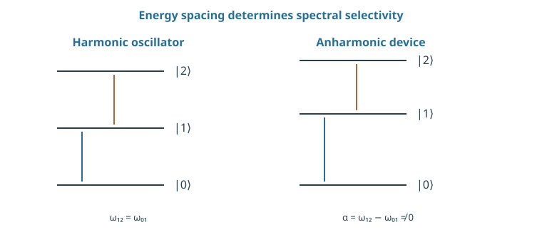
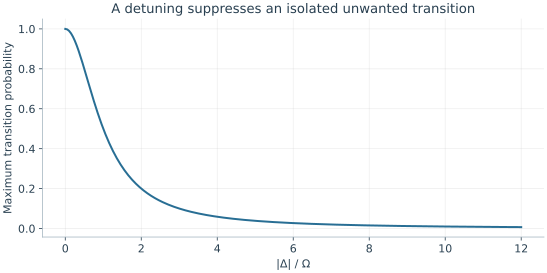

Starting point: Chapter 1; physical concepts and approximations are introduced as needed.
Anchor example: Three energy levels and a drive intended to address only two.
This lesson includes explanations, worked examples, and problems with solutions. Advanced results whose proofs are outside the chapter are identified explicitly.
We now have a rule for how a closed system evolves, \(U=e^{-iHt/\hbar}\), together with a warning: a real device has more states than the two we name. Its Hamiltonian is not a two-by-two matrix. When can two of its states be treated as a qubit, and what are the other states doing while we are not looking?
We first ask which states a Hamiltonian leaves unchanged. The answer gives energy levels and the frequencies at which their relative phases turn. Splitting the state into the chosen pair and the rest then exposes the one term a two-level picture leaves out. Asking how a coupling moves population out of the pair leads to selection rules and to a bound set by energy mismatch. Finally, because free evolution turns phases billions of times a second, we factor that motion out with a rotating frame and ask how a reduced model can be tested.
Our first question is which states a Hamiltonian leaves alone.
2.1 Energy Levels
The eigenvalues of a Hamiltonian are energies. What do its eigenvectors do in time, and why can a third one spoil a qubit made of two? Finding the states that evolve only by a phase gives energy levels and transition frequencies. Projecting onto two of those levels then isolates exactly the term that a two-level model ignores.
2.1.1 Stationary states and frequencies
Which states does a Hamiltonian leave unchanged, apart from a phase? The evolution law answers this directly. If \(H\ket j=E_j\ket j\), then \(e^{-iHt/\hbar}\ket j=e^{-iE_jt/\hbar}\ket j\). The state only gains a phase, so every measurement probability stays fixed. Such an eigenvector is called a stationary state, and its eigenvalue \(E_j\) an energy level. A device with levels \(E_0\), \(E_1\), \(E_2\) is a device whose Hamiltonian has these eigenvalues.
Why does an energy difference set an oscillation frequency? Expand a general state in stationary states, \(\ket\psi=\sum_jc_j\ket j\), and write \(\dot c_j\) for the rate of change of an amplitude. The evolution law becomes \(i\hbar\dot c_j=E_jc_j\) for each level separately. A function whose derivative is proportional to itself is an exponential, so \(c_j(t)=c_j(0)e^{-iE_jt/\hbar}\). In a superposition of \(\ket0\) and \(\ket1\), the ratio \(c_1/c_0\) therefore gains the phase \(e^{-i(E_1-E_0)t/\hbar}\).
So \(\omega_{01}=(E_1-E_0)/\hbar\) is an angular frequency, in radians per second, while \(f_{01}=(E_1-E_0)/h\) counts cycles per second. Adding the same energy to every level multiplies the whole state by a common phase and changes no probability, so only energy differences matter. A 5 GHz splitting completes one cycle of relative phase every 0.2 ns. The frequency describes a turning phase, not a particle jumping back and forth between levels.
2.1.2 The two-level approximation
Now suppose the device has a third level, and we want to use only the lowest two. Can we simply ignore the third? Let \(P=\ket0\bra0+\ket1\bra1\) project onto the chosen pair, and \(Q=I-P\) onto the rest. Apply \(P\) to the evolution law and insert \(I=P+Q\) in front of the state:
The first term is the qubit model. The second couples the qubit to the omitted level. Calling two levels a qubit does not make that term zero.
When is the second term harmless? If \(H\) is the free Hamiltonian, diagonal in the energy basis, then \(PHQ=0\) and the pair evolves on its own exactly. Trouble starts when a control adds terms that connect levels. A control tuned to the 0–1 frequency then also acts on any other transition that has the same frequency.
This is where the spacing of the levels matters. For equally spaced levels \(\omega_{12}=\omega_{01}\), so frequency alone cannot address the 0–1 transition without the 1–2 transition. We measure the departure from equal spacing by the anharmonicity \(\alpha=\omega_{12}-\omega_{01}\). A large \(|\alpha|\) is what lets a control at \(\omega_{01}\) leave the 1–2 transition nearly untouched. How large it must be depends on the strength and duration of the control.

The spacings, not just the existence of two selected states, determine whether a drive can address the qubit without exciting higher levels. Level positions are schematic.
Problem 2.1. If E1−E0=hf, what relative phase accumulates in time 1/(2f)?
Worked solution
The excited component gains exp(−iπ)=−1 relative to the ground component. This is half a cycle, not half a radian.
2.2 Qubit Encodings
Two chosen levels are a starting point, but population can still escape them. How should escaped population be counted, and what decides whether a coupling can move it at all? Defining the computational subspace fixes the bookkeeping for leakage. Asking which matrix entries a control has, and how far a mismatched coupling can move population, then bounds the escape.
2.2.1 Computational subspaces
What exactly is the qubit inside a larger system? It is the two-dimensional subspace spanned by the encoded states, called the computational subspace. The encoded states need not be energy levels. They can be two paths of one photon, or joint states of several particles. Once chosen, the encoding fixes what a physical operator means logically. For a photon in two paths, an energy shift on one path acts as a relative phase, while losing the photon removes it from the entire subspace.
How should we report leakage? Suppose a measurement resolves all three levels of a device and reports \(p_0,p_1,p_2\), summing to one. The leakage is \(L=p_2\). A procedure that discards level-2 outcomes reports \(p_1/(1-L)\) instead. With \((p_0,p_1,p_2)=(0.45,0.45,0.10)\), the retained sample looks exactly balanced, although a tenth of the population leaked. Reporting both the unconditional probabilities and the retained fraction removes that ambiguity.
2.2.2 Leakage and selection rules
Which levels can a control connect? A control adds an operator \(D\) to the Hamiltonian with some strength. In the energy basis, the entry \(\bra mD\ket n\) couples the amplitudes of levels \(n\) and \(m\). If that entry vanishes, the control cannot move population directly from \(n\) to \(m\). A vanishing entry of this kind is a selection rule. It usually comes from a symmetry of the system, so a different field or a broken symmetry can restore the coupling. A selection rule therefore names both the operator and the symmetry.
When the entry does not vanish, how much population can it move? Take the simplest case. Two levels have energies that differ by \(\hbar\Delta\), and a constant coupling of strength \(\hbar\Omega/2\) joins them. Dropping the common energy,
\[H/\hbar=\tfrac12(-\Delta Z+\Omega X).\]
Squaring gives \(H^2/\hbar^2=(\Delta^2+\Omega^2)I/4\), because \(Z^2=X^2=I\) and \(XZ+ZX=0\). Write \(\Omega_R=\sqrt{\Omega^2+\Delta^2}\) and \(N=(-\Delta Z+\Omega X)/\Omega_R\), so that \(H/\hbar=\Omega_RN/2\) with \(N^2=I\). The even and odd split of the exponential gives \(e^{-iHt/\hbar}=\cos(\Omega_Rt/2)I-i\sin(\Omega_Rt/2)N\). Since \(\bra1N\ket0=\Omega/\Omega_R\), the probability of moving from 0 to 1 is
An energy mismatch caps the transfer, however long we wait. At \(|\Delta|=10\Omega\) the cap is \(1/101\). This is the mechanism that anharmonicity relies on: the unwanted transition sees a large mismatch. A drive, viewed in suitable coordinates, will turn out to give exactly this matrix, with \(\Delta\) the mismatch between drive and transition frequencies. The bound covers one isolated transition under a constant coupling. Several unwanted levels, pulse edges, or repeated gates can each break it.

The isolated constant-drive bound is 1/[1+(Δ/Ω)²]. It is not a complete multilevel leakage prediction.
Problem 2.2. Does a zero computational-basis error guarantee no leakage?
Worked solution
No. If leaked outcomes are ignored or misclassified, the reported bit statistics can conceal population outside the chosen subspace.
2.3 Effective Dynamics
Our two-level formulas are exact for constant Hamiltonians. Yet free evolution alone turns the relative phase billions of times a second, and that known fast motion can hide the slow changes a control makes. How do we remove it, and how do we know a reduced model is right? Factoring out a reference evolution gives the rotating frame and the detuning. Asking which predictions a calibrated model has not yet seen then gives a test of the whole approximation.
2.3.1 Hamiltonians and rotating frames
What is the qubit Hamiltonian in Pauli form? With \(Z=\ket0\bra0-\ket1\bra1\), the energies \(0\) and \(\hbar\omega_{01}\) give \(H_0=\hbar\omega_{01}(I-Z)/2\). Dropping the common energy \(\hbar\omega_{01}/2\) leaves \(H_0=-\hbar\omega_{01}Z/2\). The minus sign comes from labelling level 1 as the higher-energy state.
Under \(H_0\) alone, the relative phase turns at \(\omega_{01}\). We know this motion exactly. Can we remove it and follow only the slow changes that a weak control adds? Suppose we describe the state relative to a chosen reference evolution \(R(t)=e^{-iH_{\rm ref}t/\hbar}\), writing \(\ket\psi=R(t)\ket{\psi_r}\). The evolution law gives \(i\hbar\dot R\ket{\psi_r}+i\hbar R\,d\ket{\psi_r}/dt=HR\ket{\psi_r}\). Multiplying by \(R^\dagger\) shows that \(\ket{\psi_r}\) evolves under
\[H_r=R^\dagger HR-i\hbar R^\dagger\dot R.\]
Choose the reference \(H_{\rm ref}=-\hbar\omega_dZ/2\), a phase turning at some chosen angular frequency \(\omega_d\). This \(R\) commutes with \(H_0\), and \(-i\hbar R^\dagger\dot R=-H_{\rm ref}\). So the free part becomes
\[H_r=-\hbar(\omega_{01}-\omega_d)Z/2.\]
In these coordinates the phase turns only at the difference \(\Delta=\omega_{01}-\omega_d\), called the detuning. If \(\omega_d=\omega_{01}\), the free evolution disappears altogether. Such coordinates are called a rotating frame. The frame is a choice of description, whereas changing the frequency of a physical field is an experimental action. Keeping the two apart prevents a calculation from producing a gate that no field supplied.
2.3.2 Testing the approximation
A reduced model fits the data it was calibrated on. How do we test it on data it has not seen? We estimate a transition frequency with weak spectroscopy and calibrate a rotation at one amplitude. Then we predict the response at another amplitude and detuning. An amplitude-dependent frequency shift, or an extra oscillation, shows that the model has omitted a level or a correction to the drive.
Errors also accumulate from pulse to pulse. Suppose one pulse leaves an unwanted amplitude \(\epsilon\), with population \(|\epsilon|^2\). If successive pulses add that amplitude with the same phase, after \(N\) pulses the amplitude is about \(N\epsilon\) and the population about \(N^2|\epsilon|^2\), while this stays small. Amplitudes add before they are squared. If the phases are instead random, the populations add on average, giving about \(N|\epsilon|^2\). So a small one-pulse leakage does not predict a long circuit until we know how the phases of successive errors are related.
Problem 2.3. Why is an equally spaced oscillator not automatically a selective two-level qubit?
Worked solution
A resonant field can couple several neighboring transitions at the same frequency. A usable encoding needs additional nonlinearity, selection, or control structure.
Within the chosen subspace, how does an oscillating field produce a rotation, and why must its frequency match the transition?
Worked model check. A readout discards 8% leakage events and reports 60% ones in the retained sample. What is the unconditional probability of a valid one?
Worked solution
\((1-0.08)0.60=0.552\). The other valid population is 0.368 and leakage is 0.08. The three outcomes sum to one.
These exercises draw on the whole chapter. Attempt each question before opening a hint, explain your reasoning, then compare it with the worked solution.
A qubit has \(E_1-E_0=h\times5\) GHz. Give \(\omega_{01}\) in rad/s, the time for one full cycle of relative phase, and the relative phase accumulated in \(1\) ns. Does this phase change any computational-basis probability?
Hint 1
\(\omega_{01}=2\pi f_{01}\).
Hint 2
Relative phase after time \(t\) is \(\omega_{01}t\).
Worked solution
\(\omega_{01}=2\pi\times5\times10^9\approx3.14\times10^{10}\) rad/s. One cycle takes \(1/f_{01}=0.2\) ns, so \(1\) ns accumulates \(10\pi\), five full cycles. The phase leaves \(|c_0|^2\) and \(|c_1|^2\) unchanged; it matters only for operations that interfere the two amplitudes, which is why drive timing and phase must be referenced to the qubit frequency.
A three-level readout reports \((p_0,p_1,p_2)=(0.30,0.60,0.10)\). What does a procedure that discards level-2 events report as the probability of \(1\)? What is the unconditional probability of a valid \(1\), and what should be reported alongside it?
Hint 1
The retained fraction is \(1-p_2\).
Hint 2
Postselected probability is \(p_1/(1-p_2)\).
Worked solution
Discarding level \(2\) leaves \(90\%\) of the shots, among which \(1\) appears with probability \(0.60/0.90\approx0.667\). The unconditional probability of a valid \(1\) is \(0.60\). Reporting the postselected \(0.667\) without the \(10\%\) leakage fraction overstates the computational result; both numbers, or the full three-outcome distribution, should be reported.
A weakly anharmonic qubit has \(\omega_{01}/2\pi=5.00\) GHz and anharmonicity \(\alpha/2\pi=-200\) MHz. Find \(\omega_{12}/2\pi\), and the detuning of a drive at \(\omega_{01}\) from the \(1\to2\) transition. Why would an equally spaced ladder be harder to control?
Hint 1
\(\alpha=\omega_{12}-\omega_{01}\).
Hint 2
For equal spacing, \(\alpha=0\).
Worked solution
\(\omega_{12}/2\pi=5.00-0.20=4.80\) GHz, so a drive at \(\omega_{01}\) is detuned from the unwanted transition by \(200\) MHz. That detuning is what lets a weak, slow drive address \(0\leftrightarrow1\) while barely exciting \(1\leftrightarrow2\). With equal spacing the drive would be resonant with every transition, and frequency selection could not isolate a qubit.
Use the isolated-transition bound \(\Omega^2/(\Omega^2+\Delta^2)\) for leakage to an unwanted level detuned by \(\Delta/2\pi=200\) MHz. (a) Evaluate it for \(\Omega/2\pi=20\) MHz. (b) Find the largest \(\Omega/2\pi\) that keeps the bound below \(10^{-4}\), and the corresponding \(\pi\)-pulse duration \(\pi/\Omega\). (c) With \(T_1=100\) μs, compare the decay during that pulse with the leakage target.
Hint 1
Require \(\Delta/\Omega\gtrsim100\).
Hint 2
Decay probability is about \(t/T_1\).
Worked solution
(a) \(\Omega/\Delta=0.1\), so the bound is \(1/101\approx0.0099\). (b) \(\Omega^2/(\Omega^2+\Delta^2)\le10^{-4}\) requires \(\Delta/\Omega\ge\sqrt{9999}\approx100\), so \(\Omega/2\pi\le2\) MHz and \(t_\pi=1/(2\times2\ \text{MHz})=250\) ns. (c) Decay during \(250\) ns is about \(2.5\times10^{-3}\), twenty-five times the leakage target. Slowing the pulse to suppress leakage increases decoherence; shaped pulses that limit spectral content at \(\Delta\) let a fast gate keep leakage small, which is why simple constant drives are rarely used.
For \(H/\hbar=(\Delta Z+\Omega X)/2\) starting in \(\ket0\), use \(H^2/\hbar^2=\frac{\Omega^2+\Delta^2}{4}I\) to show that the probability of \(\ket1\) at time \(t\) is \(\frac{\Omega^2}{\Omega^2+\Delta^2}\sin^2\big(\frac{\Omega_Rt}{2}\big)\) with \(\Omega_R=\sqrt{\Omega^2+\Delta^2}\). At what times is it largest, and what are the cases \(\Delta=0\) and \(\Delta=\Omega\)?
Hint 1
For \(M^2=I\), \(e^{-i\theta M}=\cos\theta I-i\sin\theta M\).
Hint 2
Write \(H/\hbar=\frac{\Omega_R}{2}M\) with \(M=(\Delta Z+\Omega X)/\Omega_R\).
Worked solution
With \(M=(\Delta Z+\Omega X)/\Omega_R\), \(M^2=I\), so \(e^{-iHt/\hbar}=\cos\frac{\Omega_Rt}{2}I-i\sin\frac{\Omega_Rt}{2}M\). Its \(\bra1\cdot\ket0\) entry is \(-i\sin\frac{\Omega_Rt}{2}\cdot\frac{\Omega}{\Omega_R}\), giving \(P_1(t)=\frac{\Omega^2}{\Omega_R^2}\sin^2\frac{\Omega_Rt}{2}\). It peaks at \(t=\pi/\Omega_R,3\pi/\Omega_R,\dots\). For \(\Delta=0\) the peak is \(1\): full Rabi oscillation. For \(\Delta=\Omega\) the peak is only \(\frac12\), and the oscillation is faster by \(\sqrt2\). Detuning both limits and speeds up the response, which is how spectroscopy locates a resonance.
A qubit at \(\omega_{01}/2\pi=5.000\) GHz is driven at \(\omega_d/2\pi=5.001\) GHz. (a) In the frame rotating at \(\omega_d\), what is the residual Hamiltonian when the drive is off? (b) How much relative phase accumulates in \(250\) ns? (c) Why does this matter for a sequence of gates referenced to the drive’s phase?
Hint 1
The residual term is \(-\hbar(\omega_{01}-\omega_d)Z/2\).
Hint 2
\((\omega_{01}-\omega_d)/2\pi=-1\) MHz.
Worked solution
(a) \(H_r=-\hbar(\omega_{01}-\omega_d)Z/2\) with \((\omega_{01}-\omega_d)/2\pi=-1\) MHz: a slow rotation about \(Z\) in the frame. (b) The phase is \(2\pi\times1\ \text{MHz}\times250\ \text{ns}=\pi/2\). (c) Gates are defined relative to the drive’s phase, so a \(\pi/2\) frame drift turns an intended \(X\) rotation into a \(Y\) rotation after \(250\) ns of idling. Even a \(1\) MHz miscalibration, \(0.02\%\) of the qubit frequency, produces a large gate error over typical circuit times.
Each pulse leaves an unwanted amplitude \(\epsilon=0.01\) in a leakage level. Estimate the leaked population after \(N=10\) pulses if the amplitudes add with the same phase, and if they add with random phases. Which case does a single-pulse measurement of \(|\epsilon|^2\) predict?
Hint 1
Coherent addition: amplitude \(N\epsilon\).
Hint 2
Random phases: populations add, giving about \(N|\epsilon|^2\).
Worked solution
Coherently, the amplitude grows to \(N\epsilon=0.1\), giving population \(0.01\). With random phases the populations add, giving about \(N|\epsilon|^2=10^{-3}\). A single-pulse measurement gives \(|\epsilon|^2=10^{-4}\) and says nothing about which accumulation applies. Repeating the pulse many times and watching how the leaked population grows, quadratically or linearly in \(N\), distinguishes the two cases.
A student argues: “To reduce decoherence during gates, always drive harder and make pulses shorter.” Using the bound \(\Omega^2/(\Omega^2+\Delta^2)\) with \(\Delta/2\pi=200\) MHz, compare the leakage bound for \(\pi\) pulses of \(250\) ns and \(25\) ns. What is the trade-off?
Hint 1
A \(\pi\) pulse of duration \(t\) needs \(\Omega=\pi/t\).
Hint 2
\(25\) ns needs \(\Omega/2\pi=20\) MHz.
Worked solution
A \(250\) ns pulse needs \(\Omega/2\pi=2\) MHz, with leakage bound about \(10^{-4}\). A \(25\) ns pulse needs \(20\) MHz, with bound about \(10^{-2}\), a hundred times larger, while decay during the pulse falls only tenfold. Shorter pulses reduce decoherence but excite unwanted transitions, because a fast pulse contains frequencies near \(\omega_{12}\). The optimum depends on both, and pulse shaping can move the trade-off but not remove it.
For a ladder whose drive operator has matrix elements \(\bra{n+1}D\ket n\propto\sqrt{n+1}\), as for a harmonic or weakly anharmonic oscillator, the \(1\to2\) coupling is \(\sqrt2\) times the \(0\to1\) coupling. (a) Rewrite the isolated-transition leakage bound for population starting in \(\ket1\) with \(0\to1\) drive strength \(\Omega\) and anharmonicity \(\alpha\). (b) Evaluate it for \(\Omega/\alpha=0.1\). (c) Why is leakage most likely in the middle and at the end of a \(\pi\) pulse from \(\ket0\)?
Hint 1
Replace \(\Omega\) by \(\sqrt2\Omega\) and \(\Delta\) by \(\alpha\).
Hint 2
Leakage from \(\ket1\) requires population in \(\ket1\) first.
Worked solution
(a) The bound becomes \(\frac{2\Omega^2}{2\Omega^2+\alpha^2}\). (b) For \(\Omega/\alpha=0.1\): \(0.02/1.02\approx0.02\), about twice the naive estimate. (c) Leakage proceeds from \(\ket1\), which is empty at the start of a \(\pi\) pulse from \(\ket0\) and full at the end. The stronger matrix element from \(\ket1\) means that gates acting on superpositions, or repeated pulses, see larger leakage than the \(0\to1\) Rabi rate alone suggests.
Two qubits on a shared control line have frequencies \(5.00\) GHz and \(5.02\) GHz. A drive at \(5.00\) GHz with \(\Omega/2\pi=10\) MHz targets the first. (a) Use the bound \(\Omega^2/(\Omega^2+\Delta^2)\) to estimate the worst-case excitation of the second qubit. (b) How far apart must the frequencies be for this crosstalk to stay below \(10^{-3}\)? (c) What does this imply for packing many qubits into a limited frequency band?
(a) \(\Delta/\Omega=2\), so the bound is \(1/(1+4)=0.2\): a large error on a qubit that should be untouched. (b) The bound falls below \(10^{-3}\) when \(\Delta/\Omega\ge31.6\), so \(\Delta/2\pi\ge316\) MHz at this drive strength (or a weaker drive). (c) Each qubit needs a clear frequency window that grows with drive strength, so a band of a few gigahertz holds only a limited number of independently addressable frequencies. This frequency crowding is one reason architectures use separate control lines, tunable frequencies, or shaped pulses.